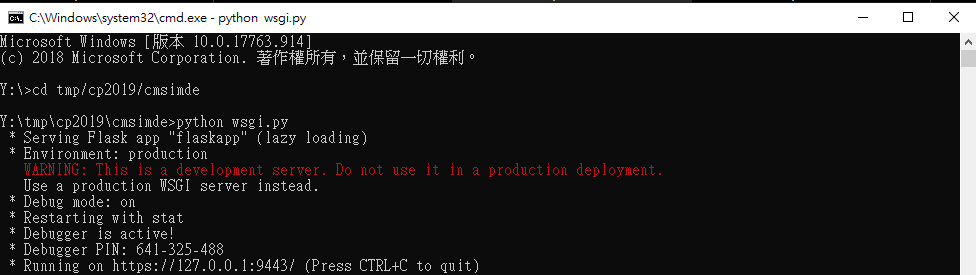
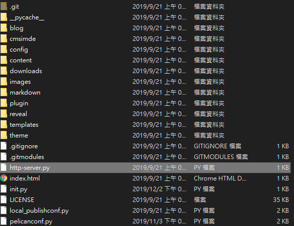
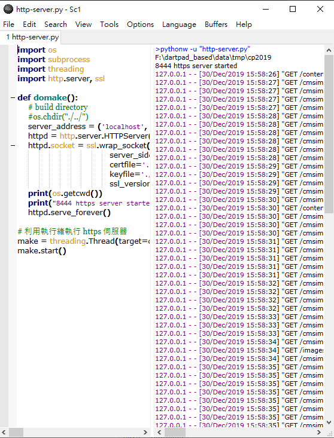
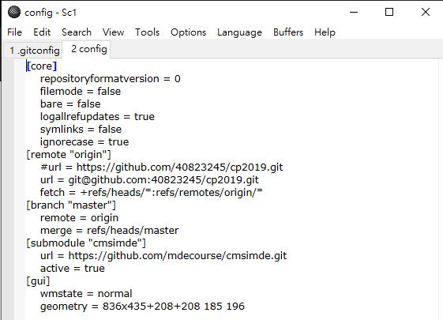
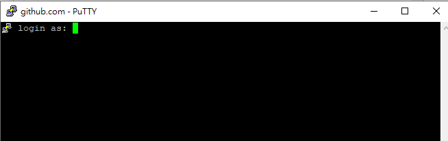
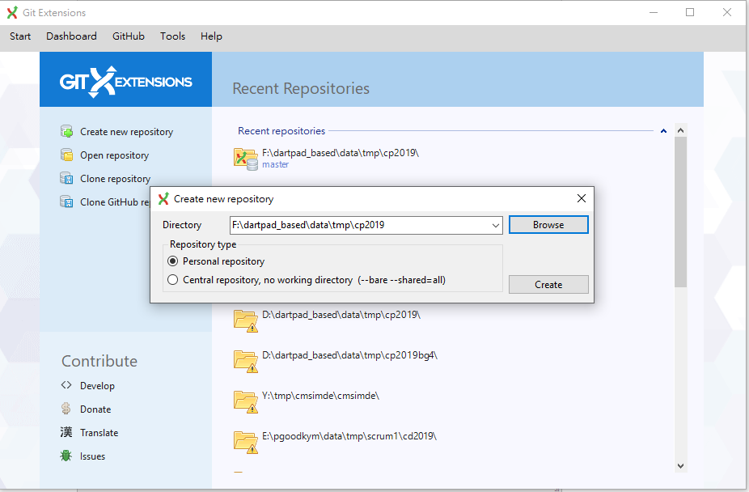
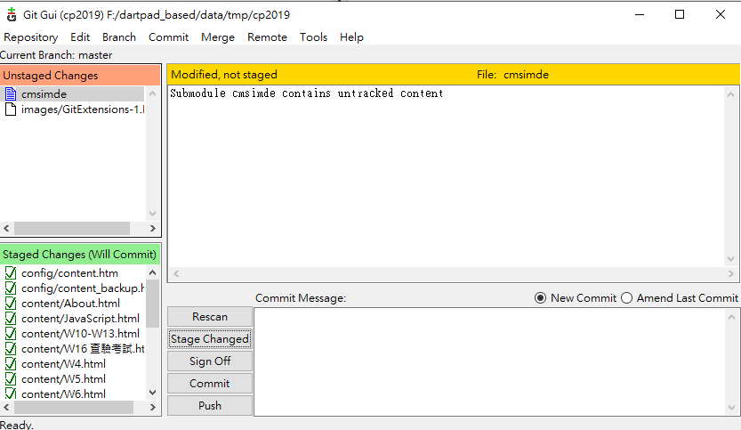
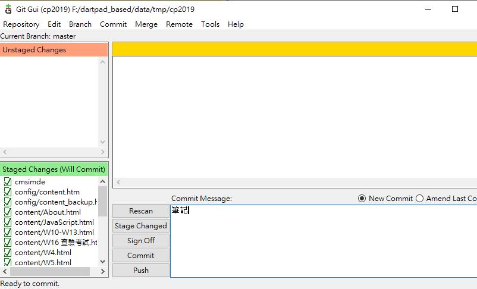
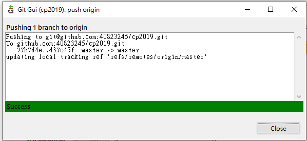

星星講解 <<
Previous 筆記
一、開啟9443

先打指令到cmsimde資料夾
在執行python wsgi.py指令
二、開啟8444
先到cp2019資料夾找到http-server.py檔案

使用白窗開啟http-server.py
點選Tools→go

三、進行上傳
方法一
先進到cp2019 → cd tmp/cp2019
git add .
git commit -m "此更新的主旨(限用英文)"
git push
輸入帳號(學號)
輸入密碼
方法二(啟用ssh)
要先改.git裡面的config
[remote "origin"]把之前的https加上# 打出第2行

開啟putty 將設定調好
點github.com 案load
設定proxy(使用自家網路、手機網路請選None)
看你的網路連到哪一台 就打一樣的proxy
打開SSH裡面的Auth
選擇你所生產的金鑰檔案
回到session點選save再open

出現上圖就代表成功
一樣先進到cp2019 → cd tmp/cp2019
git add .
git commit -m "此更新的主旨(限用英文)"
git push
(此方法不需打帳號密碼)
方法三(啟用ssh)
使用資料夾的GitExtensions
點選GitExtensions.exe
選擇Create new repository

brown找到cp2019資料夾後點Create
點tools→Git GUI

先點Stage Changed(=git add .)

左下的框會出現資料
然後右下的位置打上這次變更的主旨(=git commit -m "此更新的主旨(限用英文)")可輸入中文

點Commit→Push

星星講解 <<
Previous